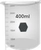
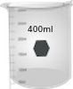

1.Turn the spectrophotometer on by clicking on the switch on the instrument.
2.Click on the fluorescein bottle in the bottom panel. You should see fluorescein being poured in a beaker.
3.Click on the pipette. You should see liquid being drawn by the pipette.
4.Click on the 10 mm cuvette. You should see the cuvette being placed below the pipette.
5.Click on the pipette again. The cuvette now should get filled with the liquid. And acuvette filled with water should appear.
6.Click on the lid the instrument to open it.
7.Click on the cuvettes one after another to put them inside the lid of the instrument.
8.Close the lid by clicking on it.
9.Click on the monitor shown in the main frame.
10.Click on the scan button and wait for the spectra to get generated.
11.Go to notes and check your collected data.
12.Repeat steps 2-11 with 5 mm and 1 mm cuvette in the bottom panel.


 
